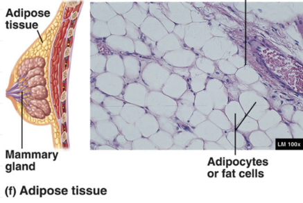
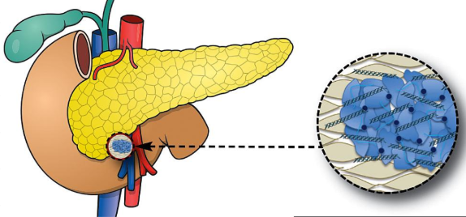

Loose Connective Tissue
Loose Connective Tissue is a cellular connective tissue with thin and relatively sparse collagen fibers. They have a semi-fluid matrix with lesser proportions of fibers. Its ground substance occupies more volume than the fibers do. It has a viscous to gel-like consistency and plays an important role in the diffusion of oxygen and nutrients from the capillaries that course through this connective tissue as well as in the diffusion of carbon dioxide and metabolic wastes back to the vessels.
Location: between organs, muscles, blood vessels, glands, skin.
Structure: collagen fibers far apart.
Function: support and protection
Types of Loose Connective Tissue
Areolar Connective Tissue
- primarily beneath epithelial tissues, surrounding organs, nerves, and blood vessels, and between muscles.
- made of collagen fibers and elastic fibers, no reticular fiber
- function: structural support, medium for diffusion, movement and immune system.

Adipose Connective Tissue
- below the skin, surrounding internal bone marrow, breast fat, and within muscle fiber.
- made of collagen and elastic fibers, little reticular fibers.
- cells filled with lipids.
- function: energy storage, insulation, protection, hormone production

Reticular Connective Tissue
- primarily composed of reticular fibers, which are thin, branching fibers made of collagen type III.
- reticular fibers form a network or meshwork (stroma) that provides structural support for various organs and tissues in the body.